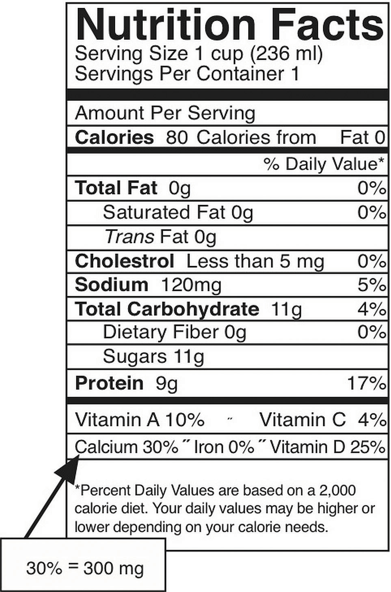

Build peak bone mass during youth to preserve bone mass during aging.
Milk has been and will continue to be a key component in the diets of millions of people. During the agrarian age, people drank milk from the animals they raised. At the dawn of the twentieth century, nutritional science appeared on the scene and quickly acknowledged milk’s importance as a part of a balanced diet. For over one hundred years, several US government nutrition programs have highlighted milk’s value. How does milk get from a cow to your doorstep?
In the early nineteenth century raw milk was distributed in carelessly washed metal pails and was, at times, still warm from the cow when it reached its destination. If you got up too late to fetch your milk you received little of the coagulated cream on top. This distribution method did not suffice for the widespread delivery of fresh milk to the masses living in cities, thus milk and its preparation methods had to be changed in several ways. Consuming raw milk can be a potential health hazard as harmful bacteria such as Salmonella, E. coli, and Listeria may be present, all of which are known as culprits for many foodborne illnesses. Pasteurization, homogenization, fortification, and eventually packaging in plastic containers were developed to address distribution and food-safety issues.
In 1863, Louis Pasteur invented pasteurization. Pasteurization involves heating the milk to a high temperature (greater than 161 degrees Fahrenheit) for a short time (less than 20 seconds) and is an effective method of killing 99.999 percent of bacteria, molds, and yeast. Pasteurization was a welcome technology as it extended the shelf life of milk by about two to three weeks and destroyed infectious bacteria, such as those that caused diphtheria, typhoid fever, tuberculosis, and scarlet fever, thereby making milk safe to drink. Unfortunately, pasteurization also destroys vitamins, enzymes, and some beneficial bacteria. Milk may also be microfiltered, a process that pushes milk forcefully through ceramic filters that remove bacteria. Milk is homogenized so that it does not separate into butter-fat globules and milk fluid. During homogenization milk is emulsified under intense pressure as it is pumped through narrow tubes. Fat globules are broken into smaller ones and they do not recoagulate. The homogenization process, however, does not have a negative effect on the milk’s nutritional value or effectiveness.
The dairy industry has gone through many changes to increase milk production, quality, and distribution. As a result of pasteurization and to meet the health needs of the American population, a public-policy decision was made in 1933 to fortify milk with vitamin D to prevent childhood bone disease. More recently, changes include expanding the number of cows per herd, increasing milk production per cow by over six-fold, improving dairy cow nutrition and herd management practices, and advancing technologies that increase storage time and decrease bacterial contamination. How did milk production increase six-fold per cow? Most cows are Holsteins, bred with optimum genetics for producing milk. They are provided with the best nutrition, a dietary pattern taken from many scientific studies that provides optimal nutrients specifically for cows to make milk. Some people are concerned about the changes that were brought about by controversial methods, such as injecting dairy cows with bovine growth hormone. This increases milk production by about 15 percent, but also increases the risk of udder infection in the cows. As a result, antibiotics are widely used in the dairy industry. There is evidence linking widespread antibiotic use with the increase in the resistance of bacteria. This practice also decreases the effectiveness of antibiotics in humans.
How will you ensure that you are building strong bones and will be able to avoid detrimental bone loss in old age?
It is estimated that every three seconds around the globe, an osteoporotic fracture occurs. Over two hundred million women worldwide suffer from this disease.Kanis, J. A. WHO Technical Report, (University of Sheffield, United Kingdom, 2007): 66. Statistics also show that one in three women and one in five men over sixty will experience an osteoporotic fracture.European Foundation for Osteoporosis and National Osteoporosis Foundation. “Who Are Candidates for Prevention and Treatment for Osteoporosis?” Osteoporos Int 7, no. 1 (1997):Melton 3rd, L. J. et al. “Perspective. How Many Women Have Osteoporosis?” J Bone Miner Res 7 (1992): 1005.Kanis, J. A. et al. “Long-Term Risk of Osteoporotic Fracture.” Malmo Osteoporos Int 11 (2000): 669. How can you prepare yourself and fortify your bones against this disease? Milk is a ready and convenient source of calcium and vitamin D, but one glass of milk per day is not sufficient to provide adequate intake of these nutrients and many people have an allergy or intolerance to dairy products. Other good sources of calcium and vitamin D are soybeans, parsley, kale, salmon, broccoli, eggs, tuna, beans, and fortified products such as soymilk, rice milk, and almond milk. As you read this chapter you will learn the importance of building and preserving healthy bones through proper diet and exercise. Whatever you decide, know that your bone health will be affected by your dietary and lifestyle choices for years to come.
Your bones are stronger than reinforced concrete. Bone tissue is a composite of fibrous collagenA strong, fibrous protein made up of mostly glycine and proline amino acids. strands that resemble the steel rebar in concrete and a hardened mineralized matrix that contains large amounts of calcium, just like concrete. But this is where the similarities end. Bone outperforms reinforced concrete by several orders of magnitude in compression and tension strength tests. Why? The microarchitecture of bone is complex and built to withstand extreme forces. Moreover, bone is a living tissue that is continuously breaking down and forming new bone to adapt to mechanical stresses.
The Human Body: Bone Strength
This video is a dramatic demonstration of bone strength.
http://www.yourdiscovery.com/video/human-body-strength-bones/
The human skeleton consists of 206 bones and other connective tissues called ligaments, tendons, and cartilage. Ligaments connect bones to other bones, tendons connect bones to muscles, and cartilage provides bones with more flexibility and acts as a cushion in the joints between bones. The skeleton’s many bones and connective tissues allow for multiple types of movement such as typing and running. The skeleton provides structural support and protection for all the other organ systems in the body. The skull, or cranium, is like a helmet and protects the eyes, ears, and brain. The ribs form a cage that surrounds and protects the lungs and heart. In addition to aiding in movement, protecting organs, and providing structural support, red and white blood cells and platelets are synthesized in bone marrow. Another vital function of bones is that they act as a storage depot for minerals such as calcium, phosphorous, and magnesium. Although bone tissue may look inactive at first glance, at the microscopic level you will find that bones are continuously breaking down and reforming. Bones also contain a complex network of canals, blood vessels, and nerves that allow for nutrient transport and communication with other organ systems.
To optimize bone health through nutrition, it is important to understand bone anatomy. The skeleton is composed of two main parts, the axial and the appendicular parts. The axial skeleton consists of the skull, vertebral column, and rib cage, and is composed of eighty bones. The appendicular skeleton consists of the shoulder girdle, pelvic girdle, and upper and lower extremities and is composed of 126 bones. Bones are also categorized by size and shape. There are four types of bone: long bones, short bones, flat bones, and irregular bones. The longest bone in your body is the femur (or “thigh” bone), which extends from your hip to your knee. It is a long bone and functions to support your weight as you stand, walk, or run. Your wrist is composed of eight irregular-shaped bones, which allow for the intricate movements of your hands. Your twelve ribs on each side of your body are curved flat bones that protect your heart and lungs. Thus, the bones’ different sizes and shapes allow for their different functions.
Bones are composed of approximately 65 percent inorganic material known as mineralized matrix. This mineralized matrix consists of mostly crystallized hydroxyapatiteThe primary crystal of bone formed from calcium and phosphorous.. The bone’s hard crystal matrix of bone tissue gives it its rigid structure. The other 35 percent of bone is organic material, most of which is the fibrous protein, collagen. The collagen fibers are networked throughout bone tissue and provide it with flexibility and strength. The bones’ inorganic and organic materials are structured into two different tissue types. There is spongy bone, also called trabecular or cancellous boneLess dense bone with a lattice-like structure. Also called spongy bone., and compact bone, also called cortical boneDense, strong bone that surrounds trabecular bone tissue. Also called compact bone. (Figure 9.1 "The Arrangement of Bone Tissues"). The two tissue types differ in their microarchitecture and porosity. Trabecular bone is 50 to 90 percent porous and appears as a lattice-like structure under the microscope. It is found at the ends of long bones, in the cores of vertebrae, and in the pelvis. Trabecular bone tissue makes up about 20 percent of the adult skeleton. The more dense cortical bone is about 10 percent porous and it looks like many concentric circles, similar to the rings in a tree trunk, sandwiched together (Figure 9.2). Cortical bone tissue makes up approximately 80 percent of the adult skeleton. It surrounds all trabecular tissue and is the only bone tissue in the shafts of long bones.
Bone tissue is arranged in an organized manner. A thin membrane, called the periosteum, surrounds the bone. It contains connective tissue with many blood vessels and nerves. Lying below the periosteum is the cortical bone. In some bones, the cortical bone surrounds the less-dense trabecular bone and the bone marrow lies within the trabecular bone, but not all bones contain trabecular tissue or marrow.
Bone tissue contains many different cell types that constantly resize and reshape bones throughout growth and adulthood. Bone tissue cells include osteoprogenitor cells, osteoblasts, osteoclasts, and osteocytes. The osteoprogenitor cells are cells that have not matured yet. Once they are stimulated, some will become osteoblastsCells that build new bone tissue., the bone builders, and others will become osteoclastsLarge cells that break down bone tissue., the cells that break bone down. OsteocytesStar-shaped cells that are the most abundant cell type in bone tissue. are the most abundant cells in bone tissue. Osteocytes are star-shaped cells that are networked throughout the bone via their long cytoplasmic arms that allow for the exchange of nutrients and other factors from bones to the blood and lymph.
Bone Modification
(click to see video)This video on bone remodeling demonstrates a bone’s adaptability to mechanical stresses.
During infancy, childhood, and adolescence, bones are continuously growing and changing shape through two processes called growth (or ossification) and modeling. In fact, in the first year of life, almost 100 percent of the bone tissue in the skeleton is replaced. In the process of modeling, bone tissue is dismantled at one site and built up at a different site. In adulthood, our bones stop growing and modeling, but continue to go through a process of bone remodelingProcess in which bone tissue is broken down and then rebuilt at the same location.. In the process of remodeling, bone tissue is degraded and built up at the same location. About 10 percent of bone tissue is remodeled each year in adults. As observed in Note 9.12 "Video 9.1", bones adapt their structure to the forces acting upon them, even in adulthood. This phenomenon is called Wolff’s law, which states that bones will develop a structure that is best able to resist the forces acting upon them. This is why exercising, especially when it involves weight-bearing activities, increases bone strength.
The first step in bone remodeling is osteocyte activation (see Figure 9.3). Osteocytes detect changes in mechanical forces, calcium homeostasis, or hormone levels. In the second step, osteoclasts are recruited to the site of the degradation. Osteoclasts are large cells with a highly irregular ruffled membrane. These cells fuse tightly to the bone and secrete hydrogen ions, which acidify the local environment and dissolve the minerals in the bone tissue matrix. This process is called bone resorptionProcess in which osteoclasts secrete hydrogen ions, which acidify the local environment and dissolve the minerals in the bone tissue matrix. and resembles pit excavation. Our bodies excavate pits in our bone tissue because bones act as storehouses for calcium and other minerals. Bones supply these minerals to other body tissues as the demand arises. Bone tissue also remodels when it breaks so that it can repair itself. Moreover, if you decide to train to run a marathon your bones will restructure themselves by remodeling to better able sustain the forces of their new function.
After a certain amount of bone is excavated, the osteoclasts begin to die and bone resorption stops. In the third step of bone remodeling, the site is prepared for building. In this stage, sugars and proteins accumulate along the bone’s surface, forming a cement line which acts to form a strong bond between the old bone and the new bone that will be made. These first three steps take approximately two to three weeks to complete. In the last step of bone remodeling, osteoblasts lay down new osteoid tissue that fills up the cavities that were excavated during the resorption process. OsteoidBone tissue that is not mineralized. is bone matrix tissue that is composed of proteins such as collagen and is not mineralized yet. To make collagen, vitamin C is required. A symptom of vitamin C deficiency (known as scurvy) is bone pain, which is caused by diminished bone remodeling. After the osteoid tissue is built up, the bone tissue begins to mineralize. The last step of bone remodeling continues for months, and for a much longer time afterward the mineralized bone is continuously packed in a more dense fashion.
Thus, we can say that bone is a living tissue that continually adapts itself to mechanical stress through the process of remodeling. For bone tissue to remodel certain nutrients such as calcium, phosphorus, magnesium, fluoride, vitamin D, and vitamin K are required.
Bone mineral density (BMD)Measurement of the amount of calcified tissue in grams per centimeter squared of bone tissue. is a measurement of the amount of calcified tissue in grams per centimeter squared of bone tissue. BMD can be thought of as the total amount of bone mass in a defined area. When BMD is high, bone strength will be great. Similar to measuring blood pressure to predict the risk of stroke, a BMD measurement can help predict the risk of bone fracture. The most common tool used to measure BMD is called dual energy X-ray absorptiometry (DEXA)A procedure during which two X-ray beams pass through a person and calculate the amount of calcified tissue in grams per unit area of bone.. During this procedure, a person lies on their back and a DEXA scanner passes two X-ray beams through their body. The amount of X-ray energy that passes through the bone is measured for both beams. The total amount of the X-ray energy that passes through a person varies depending on their bone thickness. Using this information and a defined area of bone, the amount of calcified tissue in grams per unit area (cm2) is calculated. Most often the DEXA scan focuses on measuring BMD in the hip and the spine. These measurements are then used as indicators of overall bone strength and health. DEXA is the cheapest and most accurate way to measure BMD. It also uses the lowest dose of radiation. Other methods of measuring BMD include quantitative computed tomography (QCT) and radiographic absorptiometry. People at risk for developing bone disease are advised to have a DEXA scan. We will discuss the many risk factors linked to an increased incidence of osteoporosis and the steps a person can take to prevent the disease from developing.
Evaluate the animation below that discusses the technology of the DEXA procedure. Form a hypothesis on why doctors recommend this procedure for women over age fifty. Discuss your findings.
DEXA—Dual Energy X-Ray Absorptiometry
The most abundant mineral in the body is calciumThe most abundant mineral in mineralized bone tissue. Good dietary sources of calcium are dairy products and many vegetables with low oxalate content, such as kale, collard greens, and okra., and greater than 99 percent of it is stored in bone tissue. Although only 1 percent of the calcium in the human body is found in the blood and soft tissues, it is here that it performs the most critical functions. Blood calcium levels are rigorously controlled so that if blood levels drop the body will rapidly respond by stimulating bone resorption, thereby releasing stored calcium into the blood. (This is discussed in further detail shortly.) Thus, bone tissue sacrifices its stored calcium to maintain blood calcium levels. This is why bone health is dependent on the intake of dietary calcium and also why blood levels of calcium do not always correspond to dietary intake.
Calcium plays a role in a number of different functions in the body:
In addition to calcium’s four primary functions calcium has several other minor functions that are also critical for maintaining normal physiology. For example, without calcium, the hormone insulin could not be released from cells in the pancreas and glycogen could not be broken down in muscle cells and used to provide energy for muscle contraction.
Because calcium performs such vital functions in the body, blood calcium level is closely regulated by the hormones parathyroid hormone (PTH)Parathyroid hormone acts to increase calcium levels in the blood., calcitriolThe active hormone produced by vitamin D that also helps to increase and regulate blood calcium levels., and calcitoninThis hormone has the opposite effect of calcitriol and parathyroid hormone and aids in the maintenance of blood calcium levels by decreasing the calcium level as necessary.. Calcitriol is the active hormone produced from vitamin D. Parathyroid hormone and calcitriol act in a concert to increase calcium levels in the blood, while calcitonin does the opposite and decreases blood calcium levels. These hormones maintain calcium levels in the blood in a range between 9 and 11 milligrams per deciliter.
Four parathyroid glands, each the size of a grain of rice, can be found in the neck on the sides of the thyroid gland. PTH increases blood calcium levels via three different mechanisms (Figure 9.4). First, PTH stimulates the release of calcium stored in the bone. Second, PTH acts on kidney cells to increase calcium reabsorption and decrease its excretion in the urine. Third, PTH stimulates enzymes in the kidney that activate vitamin D to calcitriol. Calcitriol acts on intestinal cells and increases dietary calcium absorption. Thus, stored calcium is released, more calcium is absorbed from the diet, and less calcium is excreted, all of which increase calcium levels in the blood.
Calcitriol functions as a second hand to PTH. It not only increases calcium release from bone tissue, but also it increases the absorption of calcium in the small intestine and increases calcium reabsorption by the kidneys. Neither hormone will work unless accompanied by the other. Vitamin D regulates PTH secretion and PTH regulates vitamin D activation to calcitriol. Adequate levels of vitamin D allow for a balance of the calcium between what is released by bone tissue and what is incorporated into bone tissue, so that bone health is not compromised. Calcitriol and PTH function together to maintain calcium homeostasis.
Calcitonin is a hormone secreted by certain cells in the thyroid gland in response to high calcium levels in the blood. In comparison to PTH and calcitriol, calcitonin plays a small role in regulating calcium levels on a day-to-day basis. This is because as calcium levels rise in the blood, calcium feedback inhibits PTH release and effectively shuts off the actions of PTH and calcitriol. This route of feedback inhibition helps prevent calcium’s further accumulation in the blood. At higher nonphysiological concentrations, calcitonin lowers blood calcium levels by increasing calcium excretion in the urine, preventing further absorption of calcium in the gut and by directly inhibiting bone resorption.
Besides forming and maintaining strong bones and teeth, calcium has been shown to have other health benefits for the body, including:
The recommended dietary allowances (RDA) for calcium are listed in Table 9.1 "Dietary Reference Intakes for Calcium". The RDA is elevated to 1,300 milligrams per day during adolescence because this is the life stage with accelerated bone growth. Studies have shown that a higher intake of calcium during puberty increases the total amount of bone tissue that accumulates in a person. For women above age fifty and men older than seventy-one, the RDAs are also a bit higher for several reasons including that as we age, calcium absorption in the gut decreases, vitamin D3 activation is reduced, and maintaining adequate blood levels of calcium is important to prevent an acceleration of bone tissue loss (especially during menopause). Currently, the dietary intake of calcium for females above age nine is, on average, below the RDA for calcium. The Institute of Medicine (IOM) recommends that people do not consume over 2,500 milligrams per day of calcium as it may cause adverse effects in some people.
Table 9.1 Dietary Reference Intakes for Calcium
| Age Group | RDA (mg/day) | UL (mg/day) |
|---|---|---|
| Infants (0–6 months) | 200* | – |
| Infants (6–12 months) | 260* | – |
| Children (1–3 years) | 700 | 2,500 |
| Children (4–8 years) | 1,000 | 2,500 |
| Children (9–13 years) | 1,300 | 2,500 |
| Adolescents (14–18 years) | 1,300 | 2,500 |
| Adults (19–50 years) | 1,000 | 2,500 |
| Adult females (50–71 years) | 1,200 | 2,500 |
| Adults, male & female (> 71 years) | 1,200 | 2,500 |
| * denotes Adequate Intake | ||
Source: Ross, A. C. et al. “The 2011 Report on Dietary Reference Intakes for Calcium and Vitamin D from the Institute of Medicine: What Clinicians Need to Know.” J Clin Endocrinol Metab 96, no. 1 (2011): 53–8. US National Library of Medicine. http://www.ncbi.nlm.nih.gov/pubmed/21118827.
In the typical American diet, calcium is obtained mostly from dairy products, primarily cheese. A slice of cheddar or Swiss cheese contains just over 200 milligrams of calcium. One cup of nonfat milk contains approximately 300 milligrams of calcium, which is about a third of the RDA for calcium for most adults. Foods fortified with calcium such as cereals, soy milk, and orange juice also provide one third or greater of the calcium RDA. Although the typical American diet relies mostly on dairy products for obtaining calcium, there are many other good nondairy sources of calcium (see Note 9.28 "Tools for Change" in Section 9.3 "Micronutrients Essential for Bone Health: Calcium and Vitamin D" and Table 9.2 "Nondairy Dietary Sources of Calcium"). A food’s calcium content can be calculated from the percent daily value (percent DV) displayed on the Nutrition Facts panel (Figure 9.5 "How to Calculate Calcium in Milligrams from the Nutrition Facts Panel"). Since the RDA for calcium used to calculate the daily value (DV) is 1,000 milligrams, you multiply the percent DV by ten to arrive at the calcium content in milligrams for a serving of a particular food. It is important to note that most processed foods offer a poor source for this vital mineral as the refinement process strips away the nutrients in the food.
If you need to increase calcium intake, are a vegan, or have a food allergy to dairy products, it is helpful to know that there are several plant-based foods that are high in calcium. Broccoli, kale, mustard greens, and Brussel sprouts are excellent sources. One cup of these cooked vegetables provides between 100 and 180 milligrams of calcium. To increase the calcium content in your lunch and add some texture to your food, chop up some kale and put it on your sandwich or in your soup. For a list of nondairy sources that are high in calcium, see Table 9.2 "Nondairy Dietary Sources of Calcium". Additionally, you can find the calcium content for thousands of foods by visiting the USDA National Nutrient Database (http://www.nal.usda.gov/fnic/foodcomp/search/). When obtaining your calcium from a vegan diet, it is important to know that some plant-based foods significantly impair the absorption of calcium. These include spinach, Swiss chard, rhubarb, beets, cashews, and peanuts. With careful planning and good selections, you can ensure that you are getting enough calcium in your diet even if you do not drink milk or consume other dairy products.
Figure 9.5 How to Calculate Calcium in Milligrams from the Nutrition Facts Panel
The percent DV of calcium is given on the Nutrition Facts panel. To convert this to milligrams (mg), multiply this number by ten. This is the amount of calcium in milligrams in one serving. This can be done this easily ONLY for calcium and not for other nutrients because the DV for calcium, based on the RDA for adults between the ages of nineteen and fifty, is equal to 1,000 milligrams.
Table 9.2 Nondairy Dietary Sources of Calcium
| Food, Standard Amount | Calcium (mg) | Calories |
|---|---|---|
| Fortified ready-to-eat cereals (various), 1 oz. | 236–1043 | 88–106 |
| Soy beverage, calcium fortified, 1 c. | 368 | 98 |
| Sardines, Atlantic, in oil, drained, 3 oz. | 325 | 177 |
| Tofu, firm, prepared with nigarib, ½ c. | 253 | 88 |
| Pink salmon, canned, with bone, 3 oz. | 181 | 118 |
| Collards, cooked from frozen, ½ c. | 178 | 31 |
| Molasses, blackstrap, 1 Tbsp. | 172 | 47 |
| Soybeans, green, cooked, ½ c. | 130 | 127 |
| Turnip greens, cooked from frozen, ½ c. | 124 | 24 |
| Ocean perch, Atlantic, cooked, 3 oz. | 116 | 103 |
| Oatmeal, plain and flavored, instant, fortified, 1 packet prepared | 99–110 | 97–157 |
| Cowpeas, cooked, ½ c. | 106 | 80 |
| White beans, canned, ½ c. | 96 | 153 |
| Kale, cooked from frozen, ½ c. | 90 | 20 |
| Okra, cooked from frozen, ½ c. | 88 | 26 |
| Soybeans, mature, cooked, ½ c. | 88 | 149 |
| Blue crab, canned, 3 oz. | 86 | 84 |
| Beet greens, cooked from fresh, ½ c. | 82 | 19 |
| Pak-choi, Chinese cabbage, cooked from fresh, ½ c. | 79 | 10 |
| Clams, canned, 3 oz. | 78 | 126 |
| Dandelion greens, cooked from fresh, ½ c. | 74 | 17 |
| Rainbow trout, farmed, cooked, 3 oz. | 73 | 144 |
Source: US Department of Agriculture. Appendix B-4, “Nondairy Food Sources of Calcium.” 2005 Dietary Guidelines for Americans. Updated July 9, 2008. http://www.health.gov/dietaryguidelines/dga2005/document/html/appendixb.htm.
Bioavailability refers to the amount of a particular nutrient in foods that is actually absorbed in the intestine and not eliminated in the urine or feces. Simply put, the bioavailability of calcium is the amount that is on hand to perform its biological functions. In the small intestine, calcium absorption primarily takes place in the duodenum (first section of the small intestine) when intakes are low, but calcium is also absorbed passively in the jejunum and ileum (second and third sections of the small intestine), especially when intakes are higher. The body doesn’t completely absorb all the calcium in food. About 30 percent of calcium is absorbed from milk and other dairy products. Interestingly, the calcium in some vegetables such as kale, Brussel sprouts, and bok choy, is better absorbed by the body than are dairy products. The body absorbs approximately 50 percent of calcium from these plant-based sources.
Stomach acid releases calcium from foods and ionizes it to Ca++. Calcium must be in its ionized form to be absorbed in the small intestine. The greatest positive influence on calcium absorption comes from having an adequate intake of vitamin D. People deficient in vitamin D absorb less than 15 percent of calcium from the foods they eat. The hormone estrogen is another factor that enhances calcium bioavailability. Thus, as a woman ages and goes through menopause, during which estrogen levels fall, the amount of calcium absorbed decreases and the risk for bone disease increases. Some fibers, such as inulin, found in jicama, onions, and garlic, also promote calcium intestinal uptake.
Chemicals that bind to calcium decrease its bioavailability. These negative effectors of calcium absorption include the oxalates in certain plants, the tannins in tea, phytates in nuts, seeds, and grains, and some fibers. Oxalates are found in high concentrations in spinach, parsley, cocoa, and beets. In general, the calcium bioavailability is inversely correlated to the oxalate content in foods. High-fiber, low-fat diets also decrease the amount of calcium absorbed, an effect likely related to how fiber and fat influence the amount of time food stays in the gut. Anything that causes diarrhea, including sicknesses, medications, and certain symptoms related to old age, decreases the transit time of calcium in the gut and therefore decreases calcium absorption. As we get older, stomach acidity sometimes decreases, diarrhea occurs more often, kidney function is impaired, and vitamin D absorption and activation is compromised, all of which contribute to a decrease in calcium bioavailability.
Vitamin DBoth a vitamin and a hormone, vitamin D plays an essential role in maintaining calcium homeostasis. A deficiency in vitamin D compromises bone health. refers to a group of fat-soluble vitamins derived from cholesterol. Vitamins D2 and D3 are the only ones known to have biological actions in the human body. Although vitamin D3 is called a vitamin, the body can actually synthesize vitamin D3. When exposed to sunlight, a cholesterol precursor in the skin is transformed into vitamin D3. However, this is not the bioactive form of vitamin D. It first must be acted upon by enzymes in the liver and then transported to the kidney where vitamin D3 is finally transformed into the active hormone, calcitriol (1,25-dihydroxy vitamin D3) (Figure 9.7 "The Activation of Vitamin D to Calcitriol"). The skin synthesizes vitamin D when exposed to sunlight. In fact, for most people, more than 90 percent of their vitamin D3 comes from the casual exposure to the UVB rays in sunlight. Anything that reduces your exposure to the sun’s UVB rays decreases the amount of vitamin D3 your skin synthesizes. That would include long winters, your home’s altitude, whether you are wearing sunscreen, and the color of your skin (including tanned skin). Do you ever wonder about an increased risk for skin cancer by spending too much time in the sun? Do not fret. Less than thirty minutes of sun exposure to the arms and legs will increase blood levels of vitamin D3 more than orally taking 10,000 IU (250 micrograms) of vitamin D3. However, it important to remember that the skin production of vitamin D3 is a regulated process, so too much sun does cause vitamin D toxicity.
Vitamin D Production in the Body
Visit the University of North Carolina Gillings School of Global Public Health website to review the activation of vitamin D to calcitriol.
A person’s vitamin D status is determined by measuring 25-hydroxy vitamin D3 levels in the blood serum because it reflects both the vitamin D obtained from production in the skin and that from dietary sources. Measuring the active hormone, calcitriol, does not accurately reflect one’s vitamin D status because of its short half-life (six to twelve hours). The vast majority of nutrition experts consider a concentration of 25-hydroxy vitamin D3 in the blood serum less than 20 nanograms per millileter as an indicator of vitamin D deficiency. The IOM states that serum levels above 20 nanograms per milliliter are sufficient to maintain bone health in healthy individuals. Both nutrition experts and health advocates currently are debating what the optimal levels of vitamin D3 should be to take full advantage of all of its health benefits. Some advocates propose that serum levels of vitamin D3 above 40 nonograms per milliliter are optimal. To determine whether higher levels of vitamin D3 provide advantages in fighting diseases such as cancer, a large clinical trial called VITAL (Vitamin D and Omega-3 Trial) has been initiated at Brigham and Women’s Hospital and Harvard Medical School in Boston, Massachusetts. To remain updated on this trial, visit their website at http://www.vitalstudy.org/index.html.
As previously discussed, activated vitamin D3 (calcitriol) regulates blood calcium levels in concert with parathyroid hormone. In the absence of an adequate intake of vitamin D, less than 15 percent of calcium is absorbed from foods or supplements. The effects of calcitriol on calcium homeostasis are critical for bone health. A deficiency of vitamin D in children causes the bone disease nutritional ricketsA childhood bone disease caused by a lack of vitamin D. It is characterized by soft, weak bones that are susceptible to fracture.. Rickets is very common among children in developing countries and is characterized by soft, weak, deformed bones that are exceptionally susceptible to fracture. In adults, vitamin D deficiency causes a similar disease called osteomalaciaSimilar to nutritional rickets, in adults this disease involves softening and weakening of the bones due to a lack of vitamin D or a problem metabolizing the vitamin., which is characterized by low BMD. Osteomalacia has the same symptoms and consequences as osteoporosis and often coexists with osteoporosis. Vitamin D deficiency is common, especially in the elderly population, dark-skinned populations, and in the many people who live in the northern latitudes where sunlight exposure is much decreased during the long winter season.
Observational studies have shown that people with low levels of vitamin D in their blood have lower BMD and an increased incidence of osteoporosis. In contrast, diets with high intakes of salmon, which contains a large amount of vitamin D, are linked with better bone health. A review of twelve clinical trials, published in the May 2005 issue of the Journal of the American Medical Association, concluded that oral vitamin D supplements at doses of 700–800 international units per day, with or without coadministration of calcium supplements, reduced the incidence of hip fracture by 26 percent and other nonvertebral fractures by 23 percent.“Fracture Prevention with Vitamin D Supplementation: A Meta-Analysis of Randomized Controlled Trials.” JAMA 293, no. 18 (2005): 2257–64. http://jama.ama-assn.org/content/293/18/2257.long. A reduction in fracture risk was not observed when people took vitamin D supplements at doses of 400 international units.
The Institute of Medicine RDAs for vitamin D for different age groups is listed in Table 9.3 "Dietary Reference Intakes for Vitamin D". For adults, the RDA is 600 international units, which is equivalent to 15 micrograms of vitamin D. The National Osteoporosis Foundation recommends slightly higher levels and that adults under age fifty get between 400 and 800 international units of vitamin D every day, and adults fifty and older get between 800 and 1,000 international units of vitamin D every day. According to the IOM, the tolerable upper intake level (UL) for vitamin D is 4,000 international units per day. Toxicity from excess vitamin D is rare, but certain diseases such as hyperparathyroidism, lymphoma, and tuberculosis make people more sensitive to the increases in calcium caused by high intakes of vitamin D.
Table 9.3 Dietary Reference Intakes for Vitamin D
| Age Group | RDA (mcg/day) | UL (mcg/day) |
|---|---|---|
| Infant (0–6 months) | 10* | 25 |
| Infants (6–12 months) | 10* | 25 |
| Children (1–3 years) | 15 | 50 |
| Children (4–8 years) | 15 | 50 |
| Children (9–13 years) | 15 | 50 |
| Adolescents (14–18 years) | 15 | 50 |
| Adults (19–71 years) | 15 | 50 |
| Adults (> 71 years) | 20 | 50 |
| * denotes Adequate Intake | ||
Source: Ross, A. C. et al. “The 2011 Report on Dietary Reference Intakes for Calcium and Vitamin D from the Institute of Medicine: What Clinicians Need to Know.” J Clin Endocrinol Metab 96, no. 1 (2011): 53–8. http://www.ncbi.nlm.nih.gov/pubmed/21118827.
There are few food sources of vitamin D. Oily fish, such as salmon, is one of the best. The amount of vitamin D obtained from one 3-ounce piece of salmon is greater than the recommended intake for one day. Many foods, including dairy products, orange juice, and cereals are now fortified with vitamin D. Most vitamin-D-fortified foods contain about 25 percent of the RDA for vitamin D per serving, but check the label. Many people are deficient in vitamin D as a result of the few dietary sources for this vitamin.
Many other health benefits have been linked to higher intakes of vitamin D, from decreased cardiovascular disease to the prevention of infection. Furthermore, evidence from laboratory studies conducted in cells, tissues, and animals suggest vitamin D prevents the growth of certain cancers, blocks inflammatory pathways, reverses atherosclerosis, increases insulin secretion, and blocks viral and bacterial infection and many other things. Vitamin D deficiency has been linked to an increased risk for autoimmune diseases. (Autoimmune diseases are those that result from an abnormal immune response targeted against the body’s own tissues.) An increased prevalence of the autoimmune diseases, rheumatoid arthritis, multiple sclerosis, and Type 1 diabetes has been observed in populations with inadequate vitamin D levels. Additionally, vitamin D deficiency is linked to an increased incidence of hypertension. Until the results come out from the VITAL study (see Note 9.47 "Video 9.2"), the bulk of scientific evidence touting other health benefits of vitamin D is from laboratory and observational studies and requires confirmation in clinical intervention studies.
Watch the video below. List the pros and cons of consuming both raw and pasteurized milk. Develop an informed opinion based upon the history of milk and the scientific evidence about both types of milk consumption.
Raw Milk
Bone tissue is greater than 70 percent inorganic material and as such, minerals are important for maintaining skeletal health. In addition to calcium, other minerals critical for bone health are phosphorus, magnesium, and fluoride. Vitamin K is also important to bone health. But that is not all—iron, copper, zinc, and vitamin C are also essential for the synthesis of collagen. Consuming too much or too little vitamin A affects bone health too, as it plays a role in osteoclast and osteoblast activities. The fact that there are many bone-friendly nutrients provides us with one more reason why it is better to eat a diet rich in many nutrients than take one particular supplement. In Table 9.4 "Micronutrients and Bone Health", notice the important nutrients for bone health and good food sources for each.
Table 9.4 Micronutrients and Bone Health
| Micronutrient | Functional Role in Bone Health | Food Sources |
|---|---|---|
| Calcium |
|
collards, mustard greens, kale, turnips, broccoli, beans, black molasses, and fortified juices, cereals, and milk. |
| Phosphorus |
|
non-genetically-modified soy, legumes, whole grains, dairy, nuts, and seeds |
| Magnesium |
|
whole grains and legumes, almonds, cashews, hazelnuts, beets, collards, and kelp |
| Fluoride |
|
fluoridated water, foods prepared in fluoridated water, seafood (because the ocean contains natural sodium flouride) |
| Vitamin D |
|
salmon, mackerel, tuna, sardines, mushrooms, cod liver oil, egg yolks, and fortified milk, yogurt, and cheese |
| Vitamin K |
|
kale, spinach, turnip, and other dark leafy vegetables |
| Boron |
|
avocado, nuts, peanut butter, green and orange vegetables, grapes, and raisins |
| Iron |
|
red meat, egg yolks, dark leafy vegetables, dried fruit, iron-fortified foods, beans, lentils, chick peas, liver, and artichoke |
| Vitamin C |
|
citrus fruits, tomatoes and tomato juice, potatoes, Brussel sprouts, cauliflower, broccoli, strawberries, cabbage, and spinach |
| Zinc |
|
oysters, wheat germ, pumpkin seeds, squash, watermelon seeds, beans, sesame seeds, tahini, beef, lamb |
PhosphorusA mineral that makes up a substantial part of mineralized bone tissue. The dietary sources are meat, fish, and dairy products, as well as processed foods, and cola beverages. is the second most abundant mineral in the human body. Eighty-five percent of it is housed in the skeleton. In addition to serving as a primary mineral in the skeleton, phosphorus in the form of phosphate is a component of the backbones of RNA and DNA, the cellular energy storing molecule, adenosine triphosphate (ATP), and phospholipids. Because phosphorus is present with calcium in mineralized bone, it is somewhat regulated in parallel to calcium. PTH and calcitriol stimulate bone resorption, increasing not only blood levels of calcium, but also blood phosphate levels. However, in contrast to the effect of PTH on calcium reabsorption by the kidney, PTH stimulates the renal excretion of phosphate so that it does not accumulate to toxic levels.
In comparison to calcium, most Americans are not at risk for having a phosphate deficiency. Phosphate is present in many foods popular in the American diet including meat, fish, dairy products, processed foods, and beverages. Phosphate is added to many foods because it acts as an emulsifying agent, prevents clumping, improves texture and taste, and extends shelf-life. The average intake of phosphorus in US adults ranges between 1,000 and 1,500 milligrams per day, well above the RDA of 700 milligrams per day. The UL set for phosphorous is 4,000 milligrams per day for adults and 3,000 milligrams per day for people over age seventy.
Table 9.5 Dietary Reference Intakes for Phosphorus
| Age Group | RDA (mg/day) | UL (mg/day) |
|---|---|---|
| Infants (0–6 months) | 100* | – |
| Infants (6–12 months) | 275* | – |
| Children (1–3 years) | 460 | 3,000 |
| Children (4–8 years) | 500 | 3,000 |
| Children (9–13 years) | 1,250 | 4,000 |
| Adolescents (14–18 years) | 1,250 | 4,000 |
| Adults (19–70 years) | 700 | 4,000 |
| Adults (> 70 years) | 700 | 3,000 |
| * denotes Adequate Intake | ||
Table 9.6 Calcium and Phosphorus Contents in 100 Grams of Certain Foods
| Foods | Calcium (mg) | Phosphorus (mg) |
|---|---|---|
| Dairy Products | ||
| Buttermilk | 116 | 89 |
| Milk, nonfat | 123 | 101 |
| Milk, whole | 207 | 158 |
| Yogurt, low-fat | 199 | 157 |
| Yogurt, whole milk | 121 | 95 |
| Cottage cheese, low-fat | 69 | 151 |
| Swiss cheese | 791 | 567 |
| Meats | ||
| Beef, round steak | 7 | 199 |
| Chicken | 15 | 216 |
| Crab | 59 | 175 |
| Oysters | 62 | 159 |
| Legumes/Nuts | ||
| Macadamia nuts | 85 | 188 |
| Soybeans | 145 | 158 |
| Lentils | 19 | 180 |
| Lima beans | 21 | 74 |
| Vegetables | ||
| Broccoli | 47 | 66 |
| Carrots | 27 | 44 |
| Lettuce, iceberg | 19 | 20 |
| Parsley | 140 | 60 |
| Cereals/Grains | ||
| Barley | 32 | 309 |
| Wheat flour, white | 15 | 108 |
| Oat bran | 10 | 119 |
| Rice, brown | 10 | 77 |
| Rice, white | 19 | 55 |
| Processed Foods | ||
| American cheese | 712 | 923 |
| Au gratin potatoes | 83 | 95 |
| Fish sticks | 26 | 182 |
| Fast food hamburger | 46 | 97 |
| Chocolate cake mix | 150 | 270 |
| Chocolate wafer cookies | 31 | 32 |
| Granola bar | 105 | 230 |
| Carbonated Beverages | ||
| Cola | 2 | 11 |
| Clear soda | 2 | 0 |
Source: Adapted from US Department of Agriculture National Nutrient Database. Last modified November 1, 2012. http://www.nal.usda.gov/fnic/foodcomp/search/.
Approximately 60 percent of magnesiumA mineral that is part of mineralized bone tissue. The dietary sources are meat, fish, dairy products, whole grains, nuts, chocolate, and coffee. in the human body is stored in the skeleton, making up about 1 percent of mineralized bone tissue. Magnesium is not an integral part of the hydroxyapatite crystal, but it does reside on the surface of the crystal and helps maximize bone structure. Observational studies link magnesium deficiency with an increased risk for osteoporosis. A magnesium-deficient diet is associated with decreased levels of parathyroid hormone and the activation of vitamin D, which may lead to an impairment of bone remodeling. A study in nine hundred elderly women and men did show that higher dietary intakes of magnesium correlated to an increased BMD in the hip.Tucker, K. L. et al. “Potassium, Magnesium, and Fruit and Vegetable Intakes Are Associated with Greater Bone Mineral Density in Elderly Men and Women.” Am J ClinNutr 69, no. 4 (1999): 727–36. Only a few clinical trials have evaluated the effects of magnesium supplements on bone health and their results suggest some modest benefits on BMD.
In addition to participating in bone maintenance, magnesium has several other functions in the body. In every reaction involving the cellular energy molecule, ATP, magnesium is required. More than three hundred enzymatic reactions require magnesium. Magnesium plays a role in the synthesis of DNA and RNA, carbohydrates, and lipids, and is essential for nerve conduction and muscle contraction. Another health benefit of magnesium is that it may decrease blood pressure.
The RDAs for magnesium for adults between ages nineteen and thirty are 400 milligrams per day for males and 310 milligrams per day for females. For adults above age thirty, the RDA increases slightly to 420 milligrams per day for males and 320 milligrams for females.
Table 9.7 Dietary Reference Intakes for Magnesium
| Age Group | RDA (mg/day) | UL (mg/day) |
|---|---|---|
| Infants (0–6 months) | 30* | – |
| Infants (6–12 months) | 75* | – |
| Children (1–3 years) | 80 | 65 |
| Children (4–8 years) | 130 | 110 |
| Children (9–13 years) | 240 | 350 |
| Adolescents (14–18 years) | 410 | 350 |
| Adults (19–30 years) | 400 | 350 |
| Adults (> 30 years) | 420 | 350 |
| * denotes Adequate Intake | ||
Source: National Institutes of Health, Office of Dietary Supplements. “Dietary Supplement Fact Sheet: Magnesium.” Last reviewed July 13, 2009. http://ods.od.nih.gov/factsheets/Magnesium-HealthProfessional/.
Magnesium is part of the green pigment, chlorophyll, which is vital for photosynthesis in plants; therefore green leafy vegetables are a good dietary source for magnesium. Magnesium is also found in high concentrations in fish, dairy products, meats, whole grains, and nuts. Additionally chocolate, coffee, and hard water contain a good amount of magnesium. Most people in America do not fulfill the RDA for magnesium in their diets. Typically, Western diets lean toward a low fish intake and the unbalanced consumption of refined grains versus whole grains.
FluorideA mineral that blocks tooth decay and is part of mineralized bone tissue. The primary dietary source is fluoridated water. is known mostly as the mineral that combats tooth decay. It assists in tooth and bone development and maintenance. Fluoride combats tooth decay via three mechanisms:
Fluoride was first added to drinking water in 1945 in Grand Rapids, Michigan; now over 60 percent of the US population consumes fluoridated drinking water. The Centers for Disease Control and Prevention (CDC) has reported that fluoridation of water prevents, on average, 27 percent of cavities in children and between 20 and 40 percent of cavities in adults. The CDC considers water fluoridation one of the ten great public health achievements in the twentieth century.Centers for Disease Control. “10 Great Public Health Achievements in the 20th Century.” Morbidity and Mortality Weekly Report 48, no. 12 (April 2, 1999): 241–43. http://www.cdc.gov/about/history/tengpha.htm. The optimal fluoride concentration in water to prevent tooth decay ranges between 0.7–1.2 milligrams per liter. Exposure to fluoride at three to five times this concentration before the growth of permanent teeth can cause fluorosis, which is the mottling and discoloring of the teeth.
Fluoride’s benefits to mineralized tissues of the teeth are well substantiated, but the effects of fluoride on bone are not as well known. Fluoride is currently being researched as a potential treatment for osteoporosis. The data are inconsistent on whether consuming fluoridated water reduces the incidence of osteoporosis and fracture risk. Fluoride does stimulate osteoblast bone building activity, and fluoride therapy in patients with osteoporosis has been shown to increase BMD. In general, it appears that at low doses, fluoride treatment increases BMD in people with osteoporosis and is more effective in increasing bone quality when the intakes of calcium and vitamin D are adequate. The Food and Drug Administration has not approved fluoride for the treatment of osteoporosis mainly because its benefits are not sufficiently known and it has several side effects including frequent stomach upset and joint pain. The doses of fluoride used to treat osteoporosis are much greater than that in fluoridated water.
The IOM has given Adequate Intakes (AI) for fluoride, but has not yet developed RDAs. The AIs are based on the doses of fluoride shown to reduce the incidence of cavities, but not cause dental fluorosis. From infancy to adolescence, the AIs for fluoride increase from 0.01 milligrams per day for ages less than six months to 2 milligrams per day for those between the ages of fourteen and eighteen. In adulthood, the AI for males is 4 milligrams per day and for females is 3 milligrams per day. The UL for young children is set at 1.3 and 2.2 milligrams per day for girls and boys, respectively. For adults, the UL is set at 10 milligrams per day. Greater than 70 percent of a person’s fluoride comes from drinking fluoridated water when they live in a community that fluoridates the drinking water. Other beverages with a high amount of fluoride include teas and grape juice. Solid foods do not contain a large amount of fluoride. Fluoride content in foods depends on whether it was grown in soils and water that contained fluoride or cooked with fluoridated water. Canned meats and fish that contain bones do contain some fluoride.
Table 9.8 Dietary Reference Intakes for Fluoride
| Age Group | AI (mg/day) | UL (mg/day) |
|---|---|---|
| Infants (0–6 months) | 0.01 | 0.7 |
| Infants (6–12 months) | 0.50 | 0.9 |
| Children (1–3 years) | 0.70 | 1.3 |
| Children (4–8 years) | 1.00 | 2.2 |
| Children (9–13 years) | 2.00 | 10.0 |
| Adolescents (14–18 years) | 3.00 | 10.0 |
| Adult Males (> 19 years) | 4.00 | 10.0 |
| Adult Females (> 19 years) | 3.00 | 10.0 |
Source: Institute of Medicine. Dietary Reference Intakes for Calcium, Phosphorus, Magnesium, Vitamin D, and Fluoride. January 1, 1997. http://www.iom.edu/Reports/1997/Dietary-Reference-Intakes-for-Calcium-Phosphorus-Magnesium-Vitamin-D-and-Fluoride.aspx..
Vitamin KA vitamin that acts as a coenzyme that modifies proteins important for bone health. The dietary sources are green vegetables such as broccoli, cabbage, kale, parsley, spinach, and lettuce. refers to a group of fat-soluble vitamins that are similar in chemical structure. They act as coenzymes and have long been known to play an essential role in blood coagulation. Without vitamin K, blood would not clot. Vitamin K is also required for maintaining bone health. It modifies the protein osteocalcin, which is involved in the bone remodeling process. All the functions of osteocalcin and the other vitamin K-dependent proteins in bone tissue are not well understood and are under intense study. Some studies do show that people who have diets low in vitamin K also have an increased risk for bone fractures.
The AI of vitamin K for adult females is 75 micrograms per day, and for males it is 120 micrograms per day. A UL for vitamin K has not been set. Vitamin K is present in many foods. It is found in highest concentrations in green vegetables such as broccoli, cabbage, kale, parsley, spinach, and lettuce. Additionally, vitamin K can be synthesized via bacteria in the large intestine. The exact amount of vitamin K synthesized by bacteria that is actually absorbed in the lower intestine is not known, but likely contributes less than 10 percent of the recommended intake. Newborns have low vitamin K stores and it takes time for the sterile newborn gut to acquire the good bacteria it needs to produce vitamin K. So, it has become a routine practice to inject newborns with a single intramuscular dose of vitamin K. This practice has basically eliminated vitamin K-dependent bleeding disorders in babies.
Table 9.9 Dietary Reference Intakes for Vitamin K
| Age Group | RDA (mcg/day) |
|---|---|
| Infants (0–6 months) | 2.0* |
| Infants (6–12 months) | 2.5* |
| Children (1–3 years) | 30 |
| Children (4–8 years) | 55 |
| Children (9–13 years) | 60 |
| Adolescents (14–18 years) | 75 |
| Adult Males (> 19 years) | 120 |
| Adult Females (> 19 years) | 90 |
| * denotes Adequate Intake | |
Source: Institute of Medicine. Dietary Reference Intakes for Vitamin A, Vitamin K, Arsenic, Boron, Chromium, Copper, Iodine, Iron, Manganese, Molybdenum, Nickel, Silicon, Vanadium, and Zinc. January 9, 2001. http://www.iom.edu/Reports/2001/Dietary-Reference-Intakes-for-Vitamin-A-Vitamin-K-Arsenic-Boron-Chromium-Copper-Iodine-Iron-Manganese-Molybdenum-Nickel-Silicon-Vanadium-and-Zinc.aspx.
There are several factors that lead to loss of bone quality during aging, including a reduction in hormone levels, decreased calcium absorption, and increased muscle deterioration. It is comparable to being charged with the task of maintaining and repairing the structure of your home without having all of the necessary materials to do so. However, you will learn that there are many ways to maximize your bone health at any age.
OsteoporosisExcessive bone loss over time. is the excessive loss of bone over time. It leads to decreased bone strength and an increased susceptibility to bone fracture. The Office of the Surgeon General (OSG) reports that approximately ten million Americans over age fifty are living with osteoporosis, and an additional thirty-four million have osteopeniaLower than normal bone mass., which is lower-than-normal bone mineral density.Office of the Surgeon General. “Bone Health and Osteoporosis: A Report of the Surgeon General.” October 2004. http://www.surgeongeneral.gov/library/bonehealth/chapter_1.html. Osteoporosis is a debilitating disease that markedly increases the risks of suffering from bone fractures. A fracture in the hip causes the most serious consequences—and approximately 20 percent of senior citizens who have one will die in the year after the injury. Osteoporosis affects more women than men, but men are also at risk for developing osteoporosis, especially after the age of seventy. These statistics may appear grim, but many organizations—including the National Osteoporosis Foundation and the OSG—are disseminating information to the public and to health-care professionals on ways to prevent the disease, while at the same time, science is advancing in the prevention and treatment of this disease.International Osteoporosis Foundation. “Facts and Statistics about Osteoporosis and Its Impact.” © 2012 International Osteoporosis Foundation. Accessed http://www.iofbonehealth.org/facts-and-statistics.html.
As previously discussed, bones grow and mineralize predominately during infancy, childhood, and puberty. During this time, bone growth exceeds bone loss. By age twenty, bone growth is fairly complete and only a small amount (about 10 percent) of bone mass accumulates in the third decade of life. By age thirty, bone mass is at its greatest in both men and women and then gradually declines after age forty. Bone mass refers to the total weight of bone tissue in the human body. The greatest quantity of bone tissue a person develops during his or her lifetime is called peak bone massThe greatest amount of bone mass that a person reaches during their lifetime.. The decline in bone mass after age forty occurs because bone loss is greater than bone growth. On a cellular level, this means that the osteoclast-mediated bone degradation exceeds that of the bone building activity of osteoblasts. The increased bone degradation decreases the mineral content of bone tissue leading to a decrease in bone strength and increased fracture risk.
Osteoporosis is referred to as a silent disease, much like high blood pressure, because symptoms are rarely exhibited. A person with osteoporosis may not know he has the disease until he experiences a bone break or fracture. Detection and treatment of osteoporosis, before the occurrence of a fracture, can significantly improve the quality of life. To detect osteopenia or osteoporosis, BMD must be measured by the DEXA procedure. The results of a BMD scan are most often reported as T-scores. A T-scoreCompares the patient’s BMD to the averaged BMD of a healthy thirty-year-old population of the same sex. compares a person’s BMD to an averaged BMD of a healthy thirty-year-old population of the same sex. According to the World Health Organization, a T-score of −1.0 or above indicates normal BMD. A person with a T-score between −1.0 and −2.5 has a low BMD, which is a condition referred to as osteopenia. A person with a T-score of −2.5 or below is diagnosed with osteoporosis.National Osteoporosis Foundation. “Having A Bone Density Test.” © 2011. http://www.nof.org/node/42 This classification of T-scores is based on studies of white postmenopausal women and does not apply to premenopausal women, nonwhite postmenopausal women, or men.
Osteoporosis is categorized into two types that differ by the age of onset and what type of bone tissue is most severely deteriorated. Type 1 osteoporosis, also called postmenopausal osteoporosis, most often develops in women between the ages of fifty and seventy. Between the ages of forty-five and fifty, women go through menopause and their ovaries stop producing estrogen. Because estrogen plays a role in maintaining bone mass, its rapid decline during menopause accelerates bone loss. This occurs mainly as a result of increased osteoclast activity. The trabecular tissue is more severely affected because it contains more osteoclasts cells than cortical tissue. Type 1 osteoporosis is commonly characterized by wrist and spine fractures. Type 2 osteoporosis is also called senile osteoporosis and typically occurs after the age of seventy. It affects women twice as much as men and is most often associated with hip and spine fractures. In Type 2 osteoporosis, both the trabecular and cortical bone tissues are significantly affected. Not everybody develops osteoporosis as they age. Other factors, which will be discussed in Section 9.6 "Risk Factors for Osteoporosis" of this chapter, also contribute to the risk or likelihood of developing the disease.
During the course of both types of osteoporosis, BMD decreases and the bone tissue microarchitecture is compromised. Excessive bone resorption in the trabecular tissue increases the size of the holes in the lattice-like structure making it more porous and weaker. A disproportionate amount of resorption of the strong cortical bone causes it to become thinner. The deterioration of one or both types of bone tissue causes bones to weaken and, consequently, become more susceptible to fractures. The American Academy of Orthopaedic Surgeons reports that one in two women and one in five men older than sixty-five will experience a bone fracture caused by osteoporosis.American Academy of Orthopaedic Surgeons. “Osteoporosis.” © 1995–2012. Last reviewed August 2009. http://orthoinfo.aaos.org/topic.cfm?topic=a00232.
When the vertebral bone tissue is weakened, it can cause the spine to curve (Figure 9.8 "Osteoporosis in Vertebrae"). The increase in spine curvature not only causes pain, but also decreases a person’s height. Curvature of the upper spine produces what is called Dowager’s hump, also known as kyphosis. Severe upper-spine deformity can compress the chest cavity and cause difficulty breathing. It may also cause abdominal pain and loss of appetite because of the increased pressure on the abdomen.
Osteoporosis Defined
(click to see video)See this 3D medical animation about osteoporosis.
A risk factorA variable that is linked to an increased probability of developing a disease or adverse outcome. is defined as a variable that is linked to an increased probability of developing a disease or adverse outcome. Recall that advanced age and being female increase the likelihood for developing osteoporosis. These factors present risks that should signal doctors and individuals to focus more attention on bone health, especially when the risk factors exist in combination. This is because not all risk factors for osteoporosis are out of your control. Risk factors such as age, gender, and race are biological risk factors, and are based on genetics that cannot be changed. By contrast, there are other risk factors that can be modified, such as physical activity, alcohol intake, and diet. The changeable risk factors for osteoporosis provide a mechanism to improve bone health even though some people may be genetically predisposed to the disease.
As noted previously, after age forty, bone mass declines due to bone breakdown exceeding bone building. Therefore, any person over the age of forty has an increased probability of developing osteoporosis in comparison to a younger person. As noted, starting out with more bone (a high peak bone mass) enables you to lose more bone during the aging process and not develop osteoporosis. Females, on average, have a lower peak bone mass in comparison to males and therefore can sustain less bone tissue loss than males before developing a low BMD. Similarly, people with small frames are also at higher risk for osteoporosis. Being of advanced age, being a woman, and having a small frame are all biological risk factors for osteoporosis. Other biological risk factors that are linked to an increased likelihood of developing osteoporosis are having low estrogen levels, or another endocrine disorder such as hyperthyroidism, having a family member with osteoporosis, and being Caucasian or Asian.
EstrogenPrimary female reproductive hormone. is the primary female reproductive hormone and it stimulates osteoblast-mediated bone building and reduces osteoclast activity. Any condition in which estrogen levels are reduced throughout a woman’s life decreases BMD and increases the risk for osteoporosis. By far the most profound effect on estrogen occurs during female menopause. Around the age of forty-five or fifty, women stop producing estrogen. The rapid decline in estrogen levels that occurs during menopause speeds up the bone resorptive process, and as a result the loss of bone tissue in menopausal women lasts for a period of five to ten years. Up to 3 percent of bone tissue is lost annually during menopause and therefore potentially 30 percent of peak bone mass can vanish during this time, leading to a substantial increase in risk for developing osteoporosis in postmenopausal women.
Some medications, most notably glucocorticoids (used to treat inflammatory disorders such as rheumatoid arthritis and asthma), are associated with an increased risk for osteoporosis. A side effect of glucocorticoids is that they stimulate bone resorption and decrease bone building. Other medications linked to an increased risk for osteoporosis are certain anticancer drugs, some antidiabetic drugs, and blood thinners.
Diseases that predispose people to osteoporosis include those that disrupt nutrient absorption and retention, such as anorexia nervosa, chronic kidney disease, and Crohn’s disease; diseases that influence bone remodeling such as hyperthyroidism and diabetes; and diseases that are characterized by chronic inflammatory responses such as cancer, chronic obstructive pulmonary disease, and rheumatoid arthritis.
Bone is a living tissue, like muscle, that reacts to exercise by gaining strength. Physical inactivity lowers peak bone mass, decreases BMD at all ages, and is linked to an increase in fracture risk, especially in the elderly. Recall that mechanical stress increases bone remodeling and leads to increased bone strength and quality. Weight-bearing exercise puts mechanical stress on bones and therefore increases bone quality. The stimulation of new bone growth occurs when a person participates in weight-bearing or resistance activities that force the body to work against gravity. Research has shown that this is an excellent way to activate osteoblasts to build more new bone. Conversely, physical inactivity lowers peak bone mass, decreases BMD at all ages, and is linked to an increase in fracture risk, especially in the elderly.
Being underweight significantly increases the risk for developing osteoporosis. This is because people who are underweight often also have a smaller frame size and therefore have a lower peak bone mass. Maintaining a normal, healthy weight is important and acts as a form of weight-bearing exercise for the skeletal system as a person moves about. Additionally, inadequate nutrition negatively impacts peak bone mass and BMD. The most striking relationship between being underweight and bone health is seen in people with the psychiatric illness anorexia nervosa. Anorexia nervosa is strongly correlated with low peak bone mass and a low BMD. In fact, more than 50 percent of men and women who have this illness develop osteoporosis and sometimes it occurs very early in life.Mehler, P. S. and K. Weiner. “The Risk of Osteoporosis in Anorexia Nervosa.” Reprinted from Eating Disorders Recovery Today 1, no. 5 (Summer 2003). © 2003 Gurze Books. http://www.eatingdisordersreview.com/nl/nl_edt_1_5_2.html Women with anorexia nervosa are especially at risk because they not only have inadequate nutrition and low body weight, but also the illness is also associated with estrogen deficiency.
Smoking cigarettes has long been connected to a decrease in BMD and an increased risk for osteoporosis and fractures. However, because people who smoke are more likely to be physically inactive and have poor diets, it is difficult to determine whether smoking itself causes osteoporosis. What is more, smoking is linked to earlier menopause and therefore the increased risk for developing osteoporosis among female smokers may also be attributed, at least in part, to having stopped estrogen production at an earlier age. A review of several studies, published in the British Medical Journal in 1997, reports that in postmenopausal women who smoked, BMD was decreased an additional 2 percent for every ten-year increase in age and that these women had a substantial increase in the incidence of hip fractures.Law, M. R. and A.K. Hackshaw. “A Meta-Analysis of Cigarette Smoking, Bone Mineral Density and Risk of Hip Fracture: Recognition of a Major Effect.” Br Med J 315, no. 7112 (October 4, 1997): 841–6. http://www.ncbi.nlm.nih.gov/pubmed/9353503.
Alcohol intake’s effect on bone health is less clear. In some studies, excessive alcohol consumption was found to be a risk factor for developing osteoporosis, but the results of other studies suggests consuming two drinks per day is actually associated with an increase in BMD and a decreased risk for developing osteoporosis. The International Osteoporosis Foundation states that consuming more than two alcoholic drinks per day is a risk factor for developing osteoporosis and sustaining a hip fracture in both men and women.International Osteoporosis Foundation. “New IOF Report Shows Smoking, Alcohol, Being Underweight, and Poor Nutrition Harm our Bones.” Accessed October 2011. http://www.iofbonehealth.org/news/news-detail.html?newsID=193. Moreover, excessive alcohol intake during adolescence and young adulthood has a more profound effect on BMD and osteoporosis risk than drinking too much alcohol later in life.
Some studies have found that, similar to alcohol intake, excessive caffeine consumption has been correlated to decreased BMD, but in other studies moderate caffeine consumption actually improves BMD. Overall, the evidence that caffeine consumption poses a risk for developing osteoporosis is scant, especially when calcium intake is sufficient. Some evidence suggests that carbonated soft drinks negatively affect BMD and increase fracture risk. Their effects, if any, on bone health are not attributed to caffeine content or carbonation. It is probable that any effects of the excessive consumption of soft drinks, caffeinated or not, on bone health can be attributed to the displacement of milk as a dietary source of calcium.
Ensuring adequate nutrition is a key component in maintaining bone health. Having low dietary intakes of calcium and vitamin D are strong risk factors for developing osteoporosis. Another key nutrient for bone health is protein. Remember that the protein collagen comprises almost one third of bone tissue. A diet inadequate in protein is a risk factor for osteoporosis. Multiple large observational studies have shown that diets high in protein increase BMD and reduce fracture risk and that diets low in protein correlate to decreased BMD and increased fracture risk. There has been some debate over whether diets super high in animal protein decrease bone quality by stimulating bone resorption and increasing calcium excretion in the urine. A review in the May 2008 issue of the American Journal of Clinical Nutrition concludes that there is more evidence that diets adequate in protein play a role in maximizing bone health and there is little consistent evidence that suggests high protein diets negatively affect bone health when calcium intake is adequate.Heaney, R. P. and D.K. Layman. “Amount and Type of Protein Influences Bone Health.” Am J Clin Nutr 87, no. 5 (2008): 1567S–70S. http://www.ajcn.org/content/87/5/1567S.long
Although the symptoms of osteoporosis do not occur until old age, osteoporosis is referred to as a childhood disease with old-age consequences. Thus, preventing osteoporosis in old age begins with building strong bones when you are growing. Remember, the more bone mass a person has to start with, the greater the loss a person can withstand without developing osteopenia or osteoporosis. Growing and maintaining healthy bones requires good nutrition, adequate intake of minerals and vitamins that are involved in maintaining bone health, and weight-bearing exercise.
Actions taken to avoid developing a disease before it starts are considered primary preventionActions taken to avoid developing a disease before it starts.. Primary prevention of osteoporosis begins early on in life. About one half of mineralized bone is built during puberty and the requirements for calcium intake are higher at this time than at other times in life. Unfortunately, calcium intake in boys and girls during adolescence is usually below the recommended intake of 1,300 milligrams per day. To combat inadequate nutrition and physical inactivity in adolescents, the US Department of Health and Human Services launched the Best Bones Forever!™ campaign in 2009.US Department of Health and Human Services. Best Bones Forever! Last updated September 2009. http://www.bestbonesforever.gov/index.cfm This campaign is focused on promoting bone health, especially in girls, and reducing the incidence of osteoporosis in women.
An article in the October 2008 issue of Food and Nutrition Research concluded that there is extensive evidence that when girls and boys exercise they increase their peak bone mass and build a stronger skeleton. The greatest benefits to bone health were observed when exercise was combined with good nutrition.Karlsson, M. K., A. Nordqvist, and C. Karlsson. “Physical Activity Increases Bone Mass during Growth.” Food and Nutrition Research 52 (Published online October 1, 2008). doi: 10.3402/fnr.v52i0.1871 Because there is such a strong correlation between peak bone mass and a decreased risk for developing osteoporosis, a main thrust of organizations that promote bone health, such as the National Osteoporosis Foundation, is to provide information on how to increase skeletal health early on in life, particularly during the time period of peak bone growth, which is puberty.
Primary prevention extends throughout life, and people with one or more risk factors for osteoporosis should have their BMD measured. The National Osteoporosis Foundation recommends the following groups of people get BMD screening:
Eating a balanced diet throughout life is helpful in preventing the onset of osteoporosis and deleterious fractures in old age. There is ample scientific evidence to suggest that low intakes of calcium and vitamin D in adulthood are linked to an increased risk for developing osteoporosis. Therefore, it is essential to make sure your diet contains adequate levels of these nutrients. The roles of calcium and vitamin D in maintaining bone health are discussed in detail in Section 9.3 "Micronutrients Essential for Bone Health: Calcium and Vitamin D" of this chapter.
Mechanical stress is one of the activation signals for bone remodeling and can increase bone strength. Exercises that apply forces to the bone increase BMD. The most helpful are weight-bearing exercises such as strength training with weights, and aerobic weight-bearing activities, such as walking, running, and stair climbing. Certain aerobic exercises such as biking and swimming do not build bones, although they are very good for cardiovascular fitness. The importance of weight-bearing exercise to bone health is seen most clearly in astronauts. Investigators who analyzed the BMD of astronauts found that typically it decreases by 1.8 percent every month in space. That means during a six-month stay at a space station an astronaut may lose greater than 10 percent of their bone mass. The lack of gravity, which tugs on the bones of people on Earth every day, is what causes bone mass loss in astronauts. NASA imposes a rigorous workout to prevent and to restore the loss of bone mass in astronauts. While in space, astronauts exercise two-and-a-half hours each day on a treadmill, and use a resistance-exercise device where they pull rubberband-like cords attached to pulleys. Then, when they return to Earth astronauts undergo weeks of rehabilitation to rebuild both bone and muscle tissue.
Exercise Helps Keep Astronauts Healthy in Space
(click to see video)This video from NASA explains the importance of exercise in maintaining the health of astronauts in space.
Reducing the number of falls a person has decreases the likelihood of sustaining a fracture. Fairly simple modifications to a person’s environment, such as installing nightlights, railings on stairs, bars to hold onto in showers, and removing cords and throw rugs in walking paths can significantly reduce the likelihood of falling. Importantly, people at risk should have their vision and balance checked frequently.
A person who has undergone a DEXA scan and been diagnosed with osteopenia or osteoporosis has multiple strategies available to reduce the chances of breaking a bone. These types of treatment strategies are referred to as secondary preventionStrategies focused on halting or reversing a disease after it has developed.. The OSG reports that the primary goals in the prevention and treatment of osteoporosis are to maintain bone health by preventing its loss and by actually building new bone.Office of the Surgeon General. “Bone Health and Osteoporosis: A Report of the Surgeon General.” October, 2004 http://www.surgeongeneral.gov/library/bonehealth/chapter_9.html To accomplish these goals, the OSG recommends a pyramid approach. The base of the pyramid focuses on balancing nutrition, increasing physical activity, and preventing falls (primary prevention tactics). The second step in the pyramid is to determine if any underlying disorders or diseases are causing osteoporosis and to treat them. The third step is pharmacotherapy and involves administering medications. The second and third steps in the pyramid are secondary prevention tactics.
We have noted that certain medications and diseases either cause or aggravate osteoporosis. Treating diseases such as hyperparathyroidism or discontinuing the use of or lowering the dose of medications such as prednisone, substantially reduces the risk of further deterioration of bone tissue and fracture. (In Section 9.3 "Micronutrients Essential for Bone Health: Calcium and Vitamin D" of this chapter, you learned the mechanics of how the parathyroid hormone regulates calcium homeostasis.) When parathyroid hormone is present at continuously high levels in the blood, it causes a marked elevation in calcium levels. It raises blood calcium levels by increasing osteoclast activity, thereby increasing bone breakdown and bone loss. Hyperparathyroidism is treated by the surgical removal of the parathyroid gland tumor. Chronic kidney disease and vitamin D deficiency can also cause an increase in parathyroid hormone levels. When the increase in parathyroid hormone is the result of disorders in other organs, the condition is referred to as secondary hyperparathyroidism.
Treating diseases such as chronic kidney disease and Crohn’s disease, which are associated with decreased activation of vitamin D, increased calcium excretion, or malabsorption, is important in people who have not developed osteoporosis yet in order to arrest further losses in BMD. If these types of conditions exist simultaneously with osteoporosis, it is recommended that both disorders be treated to prevent further bone deterioration.
Despite the wealth of evidence supporting the many health benefits of calcium (particularly bone health), the average American diet falls short of achieving the recommended dietary intakes of calcium. In fact, in females older than nine years of age, the average daily intake of calcium is only about 70 percent of the recommended intake. Here we will take a closer look at particular groups of people who may require extra calcium intake.
If you are lactose intolerant, have a milk allergy, are a vegan, or you simply do not like dairy products, remember that there are many plant-based foods that have a good amount of calcium (see Note 9.28 "Tools for Change" in Section 9.3 "Micronutrients Essential for Bone Health: Calcium and Vitamin D" and Table 9.2 "Nondairy Dietary Sources of Calcium") and there are also some low-lactose and lactose-free dairy products on the market.
Many people choose to fulfill their daily calcium requirements by taking calcium supplements. Calcium supplements are sold primarily as calcium carbonate, calcium citrate, calcium lactate, and calcium phosphate, with elemental calcium contents of about 200 milligrams per pill. It is important to note that calcium carbonate requires an acidic environment in the stomach to be used effectively. Although this is not a problem for most people, it may be for those on medication to reduce stomach-acid production or for the elderly who may have a reduced ability to secrete acid in the stomach. For these people, calcium citrate may be a better choice. Otherwise, calcium carbonate is the cheapest. The body is capable of absorbing approximately 30 percent of the calcium from these forms.
There is public health concern about the lead content of some brands of calcium supplements, as supplements derived from natural sources such as oyster shell, bone meal, and dolomite (a type of rock containing calcium magnesium carbonate) are known to contain high amounts of lead. In one study conducted on twenty-two brands of calcium supplements, it was proven that eight of the brands exceeded the acceptable limit for lead content. This was found to be the case in supplements derived from oyster shell and refined calcium carbonate. The same study also found that brands claiming to be lead-free did, in fact, show very low lead levels. Because lead levels in supplements are not disclosed on labels, it is important to know that products not derived from oyster shell or other natural substances are generally low in lead content. In addition, it was also found that one brand did not disintegrate as is necessary for absorption, and one brand contained only 77 percent of the stated calcium content.Ross, E. A., N. J. Szabo, and I. R. Tebbett. “Lead Content of Calcium Supplements.” JAMA 2000 Sep 20; 284 (2000): 1425–33.
In general, calcium supplements perform to a lesser degree than dietary sources of calcium in providing many of the health benefits linked to higher calcium intake. This is partly attributed to the fact that dietary sources of calcium supply additional nutrients with health-promoting activities. It is reported that chelated forms of calcium supplements are easier to absorb as the chelation process protects the calcium from oxalates and phytates that may bind with the calcium in the intestines. However, these are more expensive supplements and only increase calcium absorption up to 10 percent. In people with low dietary intakes of calcium, calcium supplements have a negligible benefit on bone health in the absence of a vitamin D supplement. However, when calcium supplements are taken along with vitamin D, there are many benefits to bone health: peak bone mass is increased in early adulthood, BMD is maintained throughout adulthood, the risk of developing osteoporosis is reduced, and the incidence of fractures is decreased in those who already had osteoporosis. Calcium and vitamin D pills do not have to be taken at the same time for effectiveness. But remember that vitamin D has to be activated and in the bloodstream to promote calcium absorption. Thus, it is important to maintain an adequate intake of vitamin D.
A recent study published in the British Medical Journal reported that people who take calcium supplements at doses equal to or greater than 500 milligrams per day in the absence of a vitamin D supplement had a 30 percent greater risk for having a heart attack.Bolland, M. J. et al. “Effect of Calcium Supplements on Risk of Myocardial Infarction and Cardiovascular Events: Meta-Analysis.” Br Med J 341, no. c3691 (July 29, 2010). Does this mean that calcium supplements are bad for you? If you look more closely at the study, you will find that 5.8 percent of people (143 people) who took calcium supplements had a heart attack, but so did 5.5 percent of the people (111) people who took the placebo. While this is one study, several other large studies have not shown that calcium supplementation increases the risk for cardiovascular disease. While the debate over this continues in the realm of science, we should focus on the things we do know:
There are many proponents of low-phosphate diets for bone health. Scientific studies do provide evidence that diets consisting of a high intake of processed foods and cola beverages compromise bone health as well as increase the prevalence of obesity. Overall however, the data is inconsistent to show whether it is the phosphate content that is the culprit. The mechanism by which diets high in phosphate could cause a decrease in bone health is the following: a high dietary intake of phosphate leads to an increase in blood phosphate levels. High levels of phosphate in the blood stimulate the release of parathyroid hormone (PTH), which in turn stimulates bone resorption and calcium is lost from the bone. When calcium intake is adequate, it shuts off PTH release, but when calcium intake is inadequate and phosphate intake is high, bone health suffers. How much it suffers is under a considerable amount of debate in the scientific literature. It is a good idea to eat foods that are good sources for both calcium and phosphorus. Table 9.6 "Calcium and Phosphorus Contents in 100 Grams of Certain Foods" shows the calcium and phosphorus contents in certain foods.
While the scientific community debates the effects of phosphate, we do know that carbonated cola beverages have negative effects on bone health. A study published in the Archives of Pediatrics and Adolescent Medicine reports that teenage girls who were physically active and drank carbonated cola beverages were five times more likely to break a bone than physically active girls who did not drink carbonated beverages.Wyshak, G. “Teenaged Girls, Carbonated Beverage Consumption, and Bone Fractures.” Arch Pediatr Adolesc Med 154 (2000): 610–13. http://archpedi.ama-assn.org/cgi/content/full/154/6/610?ijkey=d457e7f399850f63fdb8ee9ff3c3a61afcf3e352 The Beverage Guidance Panel, headed by Dr. Barry Popkin from the University of North Carolina, Chapel Hill, recommends drinking not more than one 8-ounce carbonated soft drink per day. A bone-healthy diet is one that does not replace milk and high calcium snacks with carbonated soft drinks and processed foods.
Evidence has been uncovered recently indicating that lactose-free diets result in decreased calcium absorption because dietary lactose has been shown to actually enhance calcium absorption. Thus, lactose intolerance (and lactose-free diets) may predispose one to inadequate bone mineralization, an issue now correlated to many other disorders involving pediatric patients. Researchers are still working to clarify the effects of lactose-free diets in youth on long-term bone mineral content and the risks of osteoporosis and bone fractures with aging. Calcium homeostasis is also affected by protein intake, vitamin D status,Holick, MF. Ann Epidemiol. 2009 Feb;19(2):73–8. Epub 2008 Mar 10.NIH Public Access: “Vitamin D Status: Measurements, Interpretations, and Clinical Application.” http://www.ncbi.nlm.nih.gov/pubmed/18329892. salt intake, and genetic and other factors, making long-term studies critical in determining the risks of each or all of these to bone health. Recent studies also indicate that in the future, genetic testing may be appropriate for spotting people who may be at a higher risk of lactase deficiency and subsequent decreased BMD. This may enable early intervention through dietary modification or supplementation.Heyman, M. B., MD, MPH. “Lactose Intolerance in Infants, Children, and Adolescents.” Pediatrics 118, no. 3 (September 1, 2006): 1279–86. doi: 10.1542/peds.2006-1721.
In your effort to maintain proper bone health, and prevent and treat osteoporosis, you will need to eat a balanced diet of foods that contain not only calcium and vitamin D, but also the other important bone-building nutrients. You will also need to employ physical exercise habits to encourage bone activity, such as remodeling. By consuming foods rich in bone-building materials on a daily basis, you can reduce your need for supplementation. However, if you cannot get the required amounts of calcium you need through diet alone, there are inexpensive, safe, and effective calcium supplements to choose from. As with anything you choose to consume or with any activity that you choose to undertake, supplementation, diet, and exercise should be uniquely tailored to your circumstances.
Visit the websites below and come up with your own opinion on whether carbonated cola beverages increase the risk of developing osteoporosis. Discuss with your classmates what evidence is lacking. What do you and your classmates think about the position of The Coca-Cola Company Beverage Institute? Do they make a good argument? Can you counter it with better scientific evidence?
http://www.medpagetoday.com/Endocrinology/Osteoporosis/4247
Watch the following video on the DEXA technology. Then compose a hypothetical list of osteoporosis risk factors for a woman over the age of fifty and provide a recommendation on when she should start having her BMD monitored.
DEXA—Dual Energy X-Ray Absorptiometry